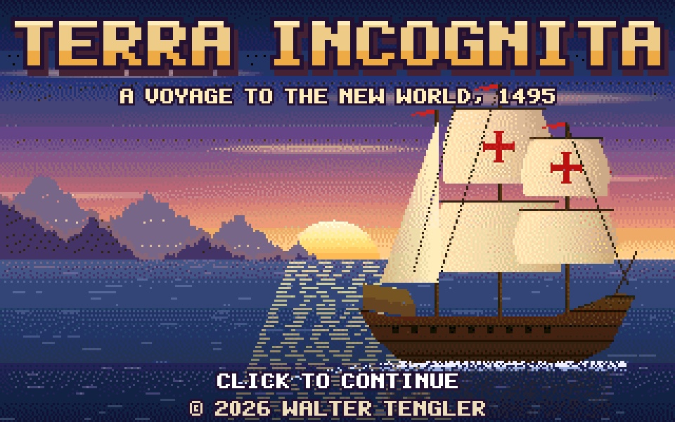
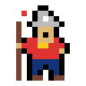
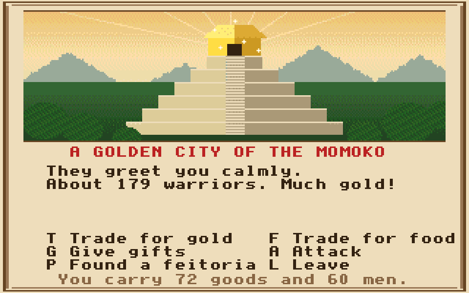

APPLE IIGSExploration & Trade8 MB
A VOYAGE TO THE NEW WORLD · 1495
Terra Incognita

Sail west. Chart the unknown.
Outfit your caravels in Lisboa, cross the ocean sea, meet the peoples of a land
no chart has shown — and bring gold and maps home to the King.
no chart has shown — and bring gold and maps home to the King.
 Your Caravelby wind and stars
Your Caravelby wind and stars
The Captainfrom Escudeiro to Vice-Rei
Golden Citiesrumoured, far inland1495EL-REI
© 2026 Walter Tengler65816 Assembly · Ensoniq Sound3.5" Disk